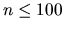

Find out the center of masses of a convex polygon.
A series of convex polygons, defined as a number n ()
stating the
number of points of the polygon, followed by n different pairs of integers
(in no particular order), denoting the x and y coordinates of each point.
The input is finished by a fake ``polygon" with m (m < 3) points, which
should not be processed. No three points are aligned in any polygon.
For each polygon, a single line with the coordinates x
and y of the center of masses of that polygon, rounded to three decimal
digits.
4 0 1 1 1 0 0 1 0
3 1 2 1 0 0 0
7
-4 -4
-6 -3
-4 -10
-7 -12
-9 -8
-3 -6
-8 -3
1
0.500 0.500
0.667 0.667
-6.102 -7.089
Miguel Revilla
2000-08-21